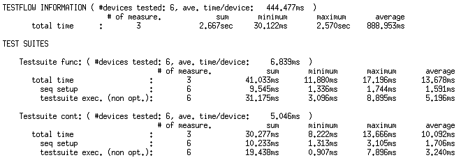
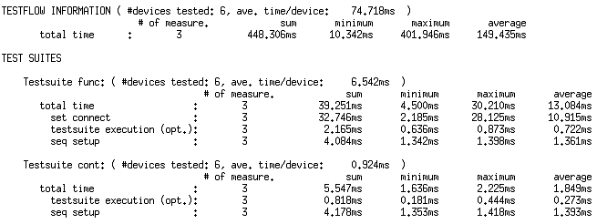

Understanding the Output of Debug Mode 3
The output of debug mode 3 is structured according to the application model. Timing information is given for the complete test and for every level of the application model. The core of the output is the information about the test flow (corresponds to the DEVICE_TEST level), to which the following explanations will be restricted.
The format of the debug 3 output is explained by the example of a simple test flow which comprises two test suites, cont and func, in this order. cont performs a continuity test, func a functional test. Note that both test suites only ask for a global PASS/FAIL result. The test flow is executed 3 times for 2 sites, resulting in 6 devices.
The first figure displays the results when the test flow is not optimized:

Observe the following points in the listing:
- The # of measure. column in the TESTFLOW INFORMATION specifies the number of test flow repetitions. The number of measurements that is specified on the test suite level in the seq setup and test suite exec. rows specifies how often the respective test suite is executed. If the test flow is not optimized, this number is the number of test flow repetitions multiplied by the number of sites. The reason for this is that the two sites are processed serially in an un-optimized test flow, so that the test suite must be called twice in every test flow repetition.
- Note that the time spent for execution of connect/disconnect sequences is not explicitly specified in an un-optimized test flow. It is included in the test suite execution time. This is in contrast to the output for optimized test flows, for which see below. In both optimized and un-optimized test flows a test suite executes a connect/disconnect sequence only if this is necessary.
- The test suites are ordered as they are defined in the test flow file.
- The total time of the test flow is greater than the sum of all total test suite times. There are several reasons for this. For example, the test flow can contain nodes which are not test suites, such as Assign Value nodes.
The second figure displays the results after the test flow has been optimized:

Observe the following points in this listing:
- An additional line set connect is specified for the test suite func, but not for cont. This shows that a connect/disconnect sequence is executed for func, but not for cont. In fact, since the tester is in the DISCONNECTED state at the start of a test flow, and the continuity test of the first test suite must be executed in the DISCONNECTED state, it is not necessary to disconnect it again. But the functional test of func must be executed in the CONNECTED state, and therefore a connect sequence must be executed at the start of the second test suite.
- The benefit of downloading the setup data only once can be read off from the seq setup line of cont. The advantage of executing all sites in parallel can be read off from the test suite execution lines of both test suites. The parallel execution of the two sites is also reflected by the number of measurements for the seq setup and test suite execution rows (3 instead of 6).
Functional changes
- Introduced before SmarTest 6.3.2